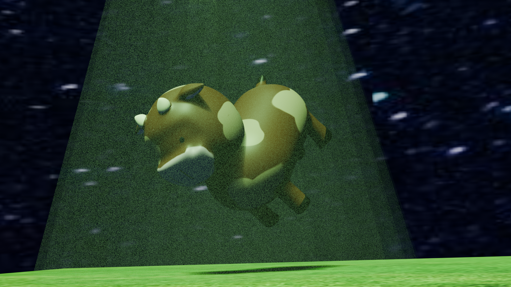

Hi! I'm Chiara Espejo and I'm an Art prep for teaching major here at SJSU. On this website, you will find projects from my Intro to Digital Media Arts class!
I am an illustrator and artist working in both traditional and digital mediums. I use a variety of watercolor, ink, graphite, charcoal, and digital drawing programs depending on my mood. My work is influenced by the various comics, webtoons, manga, anime, and animations I enjoyed in my childhood. I am interested in portraying the mundane occurrences of my own daily life, as a sort of visual journal for myself. I explore whatever interests me at the time, like popular media, games, or other artists. Through my work, I try to understand and process my recent life events, however spectacular or boring they may be. I want viewers to be able to connect with my art through their own personal experiences and hopefully uplift their mood knowing that they can relate to someone out there.
My name is Chiara Espejo and I was born and raised in Modesto, California. I received my Associates in Studio Art in 2023 from Modesto Junior College and am currently seeking a Baccalaureate in Art, Preparation for Teaching from San Jose State University. My interests include both traditional and digital arts, with a recent exploration of 2d animation. My work focuses on the silly and inane thoughts that appear in my head throughout the day, as well as fanart for whatever is my current hyperfixation.
